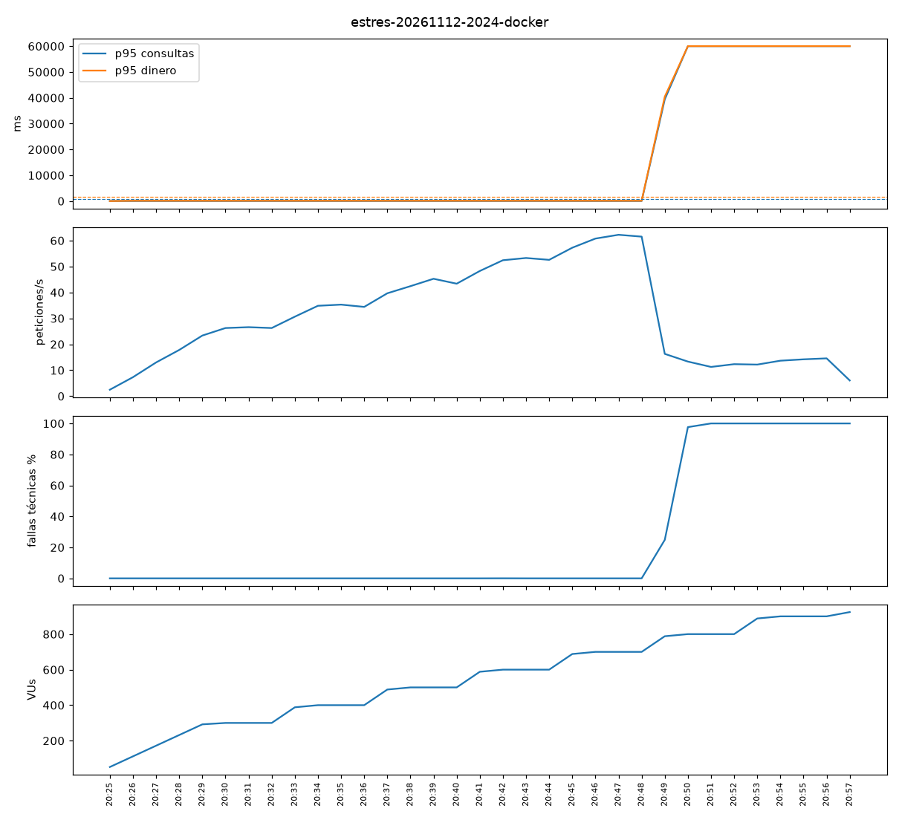
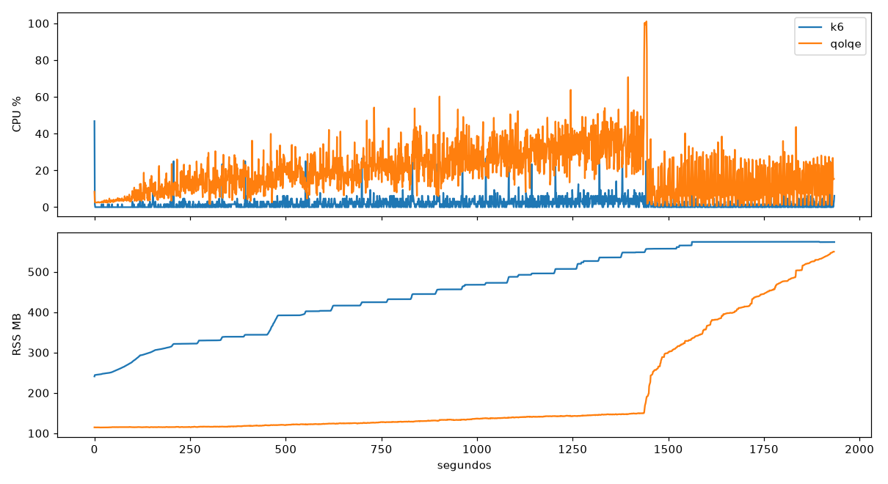

Estrés · 12/11/2026 20:24
Docker en Windows (Qolqe a 1 CPU / 1 GB) · carpeta estres-20261112-2024-docker
Corrida de estrés que cita el Informe_Rendimiento_G3.docx (capacidad de 700 usuarios).
✗ 3 de 4 umbrales incumplidos En el estrés es lo esperado: se sube la carga hasta que algo quiebre.Peticiones HTTP
60 674
31,3 por segundo en promedio
Fallas HTTP
6 080
10,02 % de las peticiones
Iteraciones (sesiones)
9 555
4,94 por segundo
Usuarios virtuales máx.
1 000
Duración
32 min
1937 s
CPU de Qolqe
19 %
máx. 101 % · memoria máx. 550 MB
CPU del generador (k6)
1,9 %
máx. 47 %
Integridad de los datos
INTEGRIDAD OK
Operaciones de dinero confirmadas a k6: 9016; filas nuevas: 9019
AVISO 3 operaciones aplicadas aunque k6 recibió error o timeout
Umbrales (criterios de aceptación)
| Métrica | Condición | Medido | Resultado |
|---|---|---|---|
http_req_duration{tipo:consulta} | p(95)<800 | 60,00 s | ✗ incumplido |
http_req_failed | rate<0.10 | 10,02 % | ✗ incumplido |
http_req_duration{tipo:dinero} | p(95)<1500 | 35,19 s | ✗ incumplido |
errores_negocio | count<1 | 0 | ✓ cumplido |
Latencia
| Medida | Promedio | Mediana | p90 | p95 | p99 | Máx. |
|---|---|---|---|---|---|---|
| Todas las peticiones | 5,87 s | 2,9 ms | 17,23 s | 60,00 s | 60,00 s | 60,00 s |
| Consultas (tipo consulta) | 6,37 s | 2,5 ms | 60,00 s | 60,00 s | 60,00 s | 60,00 s |
| Operaciones de dinero (tipo dinero) | 3,19 s | 48,4 ms | 117,2 ms | 35,19 s | 60,00 s | 60,00 s |
| Sesión completa (iteración) | 99,05 s | 101,68 s | 118,75 s | 166,10 s | 402,56 s | 515,89 s |
El dashboard de k6 solo muestra la fila «Todas las peticiones»; el corte por tipo sale de las etiquetas que pone qolqe.js.
Por endpoint
| Endpoint | Peticiones | p95 | Máx. |
|---|---|---|---|
GET /api/cuentas/me/saldo | 11 138 | 45 ms | 60001 ms |
GET /api/cuentas/me | 11 116 | 12 ms | 60001 ms |
POST /api/auth/login | 9 678 | 60000 ms | 60002 ms |
GET /api/contactos | 7 884 | 6 ms | 60001 ms |
GET /api/movimientos | 5 615 | 60000 ms | 60001 ms |
POST /api/transferencias | 4 822 | 44101 ms | 60001 ms |
POST /api/recargas | 3 026 | 60000 ms | 60001 ms |
GET /api/servicios/deudas | 1 824 | 35527 ms | 60001 ms |
POST /api/servicios/pagos | 1 743 | 13 ms | 60001 ms |
GET /api/solicitudes | 795 | 60000 ms | 60001 ms |
GET /api/seguridad/dispositivos | 788 | 60000 ms | 60001 ms |
GET /api/limites/alertas | 755 | 60000 ms | 60001 ms |
GET /api/limites | 753 | 60000 ms | 60001 ms |
GET /api/seguridad/sesiones | 737 | 60000 ms | 60001 ms |
Por minuto
33 minutos (usuarios, peticiones por segundo, p95 en ms, % de fallas)
| Minuto | Usuarios | Req/s | p95 consulta | p95 dinero | Fallas % |
|---|---|---|---|---|---|
| 20:25 | 52 | 2.48 | 27 | 0 | 0.0 |
| 20:26 | 112 | 7.32 | 27 | 115 | 0.0 |
| 20:27 | 172 | 13.0 | 26 | 114 | 0.0 |
| 20:28 | 232 | 17.82 | 26 | 118 | 0.0 |
| 20:29 | 292 | 23.37 | 26 | 116 | 0.0 |
| 20:30 | 300 | 26.27 | 26 | 113 | 0.0 |
| 20:31 | 300 | 26.6 | 26 | 116 | 0.0 |
| 20:32 | 300 | 26.27 | 26 | 117 | 0.0 |
| 20:33 | 388 | 30.65 | 27 | 111 | 0.0 |
| 20:34 | 400 | 34.85 | 25 | 116 | 0.0 |
| 20:35 | 400 | 35.3 | 26 | 116 | 0.0 |
| 20:36 | 400 | 34.42 | 26 | 118 | 0.0 |
| 20:37 | 488 | 39.67 | 27 | 114 | 0.0 |
| 20:38 | 500 | 42.42 | 26 | 117 | 0.0 |
| 20:39 | 500 | 45.27 | 26 | 115 | 0.0 |
| 20:40 | 500 | 43.37 | 26 | 116 | 0.0 |
| 20:41 | 588 | 48.27 | 26 | 114 | 0.0 |
| 20:42 | 600 | 52.42 | 26 | 113 | 0.03 |
| 20:43 | 600 | 53.28 | 26 | 114 | 0.0 |
| 20:44 | 600 | 52.57 | 26 | 114 | 0.0 |
| 20:45 | 688 | 57.25 | 26 | 116 | 0.0 |
| 20:46 | 700 | 60.77 | 26 | 117 | 0.0 |
| 20:47 | 700 | 62.23 | 26 | 114 | 0.0 |
| 20:48 | 700 | 61.52 | 27 | 117 | 0.0 |
| 20:49 | 788 | 16.3 | 39411 | 40433 | 24.85 |
| 20:50 | 800 | 13.33 | 60001 | 60001 | 97.62 |
| 20:51 | 800 | 11.27 | 60001 | 60001 | 100.0 |
| 20:52 | 800 | 12.33 | 60001 | 60001 | 100.0 |
| 20:53 | 888 | 12.17 | 60001 | 60001 | 100.0 |
| 20:54 | 900 | 13.67 | 60001 | 60001 | 100.0 |
| 20:55 | 900 | 14.2 | 60001 | 60001 | 100.0 |
| 20:56 | 900 | 14.57 | 60001 | 60001 | 100.0 |
| 20:57 | 924 | 6.05 | 60001 | 60000 | 100.0 |
Gráficos


Archivos de la corrida
dashboard.html · k6.txt · summary.json · por-minuto.csv · por-endpoint.csv · integridad.txt
Datos de k6 (summary.json, k6.json.gz), de monitor.py (recursos) y de la verificación de integridad. Generado por resumen.py.